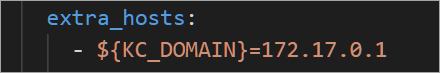

Update the docker-compose.yaml file#
Open the
docker-compose.yamlfile at the root of theAnsys_App_Portal_and_Deployment_Templatedirectory.Update the following labels:
In the
oauthservice underlabels, updatetraefik.http.routers.oauth.rule:docker-compose.yaml#"traefik.http.routers.oauth.rule": "(HostRegexp(`{subdomains:.*}.${OP_BASE_DOMAIN}`) || Host(`${OP_BASE_DOMAIN}`)) && (PathPrefix(`/oauth2`) || PathPrefix(`/saf/portal/oauth2`) || PathPrefix(`/saf/portal/api/oauth2`))"
In the
traefikservice underlabels, updatetraefik.http.routers.dashboard.rule:docker-compose.yaml#"traefik.http.routers.dashboard.rule": "Host(`TR_HOST_URL`)"
In a WSL terminal, fetch the value of
docker IP:ip addr show docker0
In
docker-compose.yaml, add anextra_hostssection with the value ofdocker IPto the following services:Add
extra_hoststo theoauthservice:docker-compose.yaml#extra_hosts: - ${KC_DOMAIN}=<docker IP>
Add
extra_hoststo theserverservice:docker-compose.yaml#extra_hosts: - ${KC_DOMAIN}=<docker IP>
Once added, the new
extra_hostssections should look like this:
{kind=link}